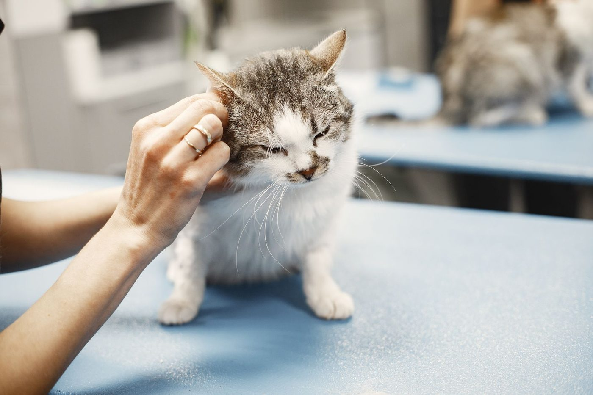
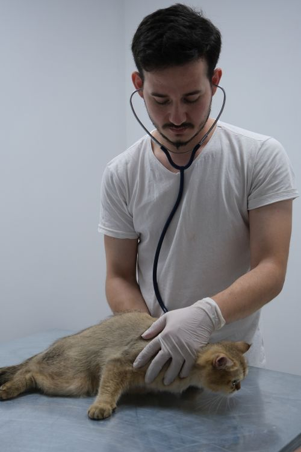
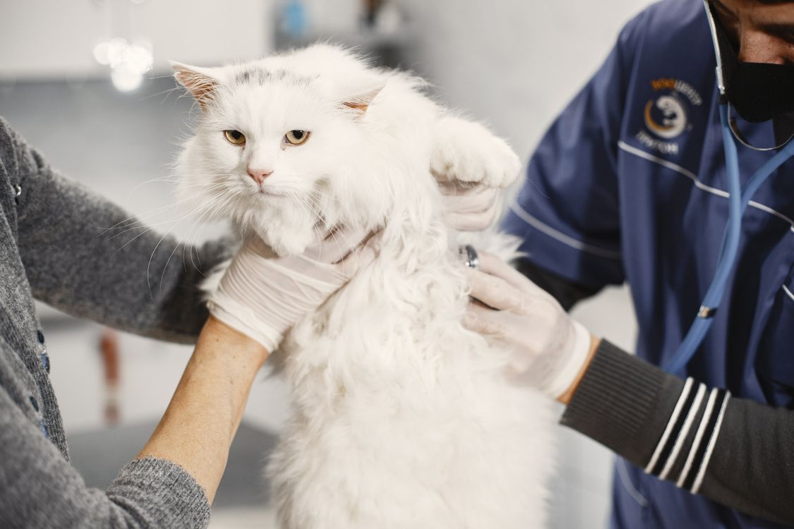

Wellness exams
Feline wellness exams for cats of every age.
CatCare
Eugene, Oregon
CatCare is Eugene's only cat-exclusive veterinary clinic, with two doctors focused on feline medicine, including Dr. Patricia Shea. Care covers wellness exams, vaccinations, diagnostics, dentistry, spay and neuter, and senior care, all for cats only.
Rated 4.7 from 311 Birdeye reviews.
Call to book: (541) 302-5824
Feline wellness exams for cats of every age.
Vaccinations as part of routine feline care.
Labwork and radiology to find what is wrong.


All photos on this page are stock photos, not photos of this business.
Address: 1400 Willamette St, Eugene, OR 97401
Plan a visitCall: (541) 302-5824